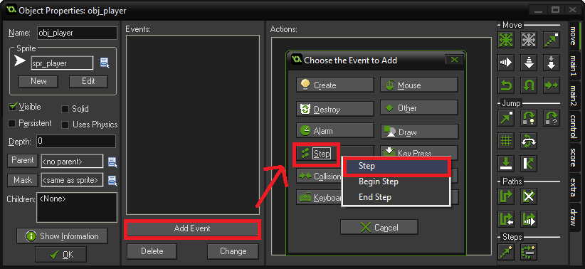
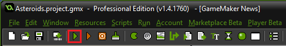

Table of Contents
In this workshop, you’ll be learning how to create a game that focuses on using the mouse.
First, we must create a file to start coding. Learn how to start a project here:
Right click the folder labeled Sprites and select Create sprite.
Tip: Name your objects consistently to keep track of everything you have created.
Rename the sprite to spr_player. Then, press Load Sprite to select an image from your computer or press Edit Sprite to create your own in the built-in sprite editor.
Tip: If you’re unsure of how large you want your sprites to be, stick with the standard 16 by 16 pixels or 32 by 32 pixels.
Once you’re done, make sure to center your sprite. Then press OK.
We also need a sprite for a missile. Create another object and name it spr_missile. Once again, feel free to design your own sprite or upload an image from your computer.
Right click the folder labeled Objects, and select Create Object. Rename the object obj_player. Under the name, select the sprite you just created to use for your player object.
Click the Add Event button, then the Step Event button, followed by Step.

Go to the Control tab on the right side of the object properties. Drag the left image of the sheet of paper to the box under “Actions”.
In the interface that pops out, type out this code:
mouseDistance = point_distance(x, y, mouse_x, mouse_y);
if (mouseDistance < 8) {
speed = 0;
exit;
}
else {
image_angle = direction;
direction = point_direction(x, y, mouse_x, mouse_y);
speed = 12;
}
This block of code checks if the player object is touching the mouse. If the statement is false, then the player object will locate and move towards the mouse at a speed of 12.
Next, we want to make use the mouse buttons! Under the code you just wrote, add this:
buttonLeft = mouse_check_button_pressed(mb_left);
if (buttonLeft) {
var missile = instance_create(x, y, obj_missile);
missile.direction = point_direction(x, y, mouse_x, mouse_y);
missile.speed = 16;
}
This code checks if the left mouse button has been pressed. If the user has pressed the left mouse button, then the player object will shoot a missile in the direction of the mouse.
Altogether, the code in the Step Event of the obj_player should look like this:
Tip: The green lines in the image are comments. To make a comment, start off a line with two slashes: //. Comments do not affect your code.
Create a obj_missile and select the spr_missile sprite you created earlier. Then, press Add Event, then Other, then Outside room.
Similar to coding the player object, go to the control tab on the right side of the object properties. Drag the document into the Actions area. In the interface that pops up, type this code:
instance_destroy();
This line of code tells the program to destroy a missiles spawned by the player if the missile leaves the game screen.
Right click the folder labeled Rooms. Rename the room to rm_game in the settings tab. Then, go to the objects tab of the room properties and add a obj_player to the room by left-clicking the box outlined in white and select obj_player. Place a obj_player in the room by clicking somewhere in the room. In the backgrounds tab, select a background colour to make your game room more lively. Once this is done, hit the green checkmark in the top left corner of the room properties.
Hit the green triangle to run your program! Make sure you typed out everything correctly or your code will not run properly.
Now you have a player that will follow your mouse! Of course, there are plenty of features you can add to personalize your project, as well as other ways you can use the mouse. This workshop barely scratches the surface but now, let your own creative ideas take over!